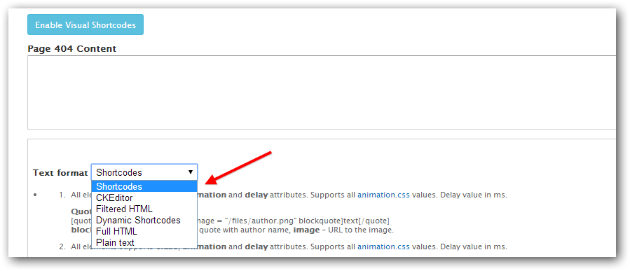

Overview
Rhythm is a clean, multi-purpose and responsive template. It is suitable for your corporate business sites, a creative agency or a portfolio projects.
Updated: 17/08/2014
Author: NikaDevs
Drupal 7.x
Rhythm - is a multipurpose Drupal theme. It's fully responsive, has moduled structure. You will define what you want to use on your website. Our goal is to save time for our customers, we will work hard providing support, and making our theme better and better in future.
Images showed on the theme is only for demonstration.
Full Drupal Install with demo content
This instruction are for people that have experience manually installing Drupal and importing databases. If you do not feel comfortable performing these steps yourself, contact your server administrator for help. WARNING Do not import the provided SQL file into an existing Drupal database or you will lose all existing data.
Full Drupal installation comes without images, which was only for theme demonstration.
After purchasing theme, you will get a download package. Extract the archive somewhere on your computer.
Click here to watch the VIDEO INSTRUCTION OF INSTALLATION PROCESS or watch it below:
-
Create a database for this installation of Drupal and import the SQL file
Rhythm_database.sql. The PhpMyAdmin might be helpfull for managing your databases. If importing theRhythm_database.sqlfile was unsuccessfull, please try to import theRhythm_database_v2.sql -
Copy the entire contents of the
Drupal_7folder to the location on your web server where you want your site to be accessed. If you want your primary domain to point to your install of Rhythm, copy everything to the root folder. If you want your site to be accessed as a subsection of your domain (for example: yourdomain.com/drupal) then simply rename theDrupal_7folder to the desired name and upload to the root of your server. -
This instruction instruction might be helpful for configuring the
/sites/default/default.settings.phpwhich should be renamed tosettings.php
Please find line 214, and fill out the settings array with your database details. - Login to your site with the username Admin and the password Admin and visit admin/people to change the admin username and password.
- Go through the Drupal configuration found in admin/config options and update all the necessary information to reflect your website. Also be sure to visit /admin/config/media/file-system and update the Files Directories.
Installation for existing sites
Extract the downloaded theme archive somewhere on your computer.
Folders modules contain all described below modules.
The list of required modules:
- ctools - Chaos tools (required by many modules).
- link - Link CCK fields.
- shortcode - Shortcode integration.
- token - Token module (required by Pathauto).
- views - Views module.
- media - Media widget for Image field.
- date - Date field for nodes.
- file_entity - File Entity is required by Media module.
- jquery_update - jQuery Update.
- shortcode - Dynamic Properties.
- rhythm_cms - Rhythm theme module.
- rhythm_shortcodes - Rhythm Shortcodes (inside rhythm_cms module).
- nikadevs_cms - NikaDevs Main Functions.
- nd_visualshortcodes - NikaDevs Visual Shortcodes (inside nikadevs_cms module).
The list of optional modules which are integrated in this theme:
- commerce - Drupal Commerce
- addressfield - Address Field (required by Drupal Commerce)
- fivestar - Five Star (required by Drupal Commerce product)
- votingapi - Voting API (required by Five Star)
- properties - Provides a dynamic property field (required by Drupal Commerce product)
- admin_menu - Usefull administrion menu
- pathauto - Pathauto (SEO friendly URLs).
- retina_images - Retina Images, high resolution images for retina displays
- ckeditor - CKEditor is a WYSIWYG editor.
- libraries - Libraries (required by CKEditor).
- tb_megamenu - Mega Menu.
The list of core modules which are used:
- block - Block
- comment - Comments
- search - Search Form
The list of modules for importing content:
- features - Features (Importing Rhythm theme features).
- blockexport - Block Export Feature
- node_export - Node Export Feature
- uuid - UUID required for Node Export
Upload files:
-
Upload from
theme_onlyfolderRhythmto your site folder in/sites/all/themes - Upload from modules all required modules to your site in /sites/all/modules folder.
- Upload from libraries all libraries to your site in /sites/all/libraries folder.
Go to the Modules page admin/modules and enable all required modules described above.
Please make sure what you are have enabled next modules before enabling the theme:
- Rhythm theme module.
- Rhythm Shortcodes.
- Rhythm Features.
- NikaDevs Visual Shortcodes.
- NikaDevs Main Features.
Login to your Drupal site and go to admin/appearance enable the Rhythm Sub Theme theme and set it as the default theme.
Go to jQuery Update page admin/config/development/jquery_update and set the Default jQuery Version to 1.7.
Import Content
Make sure what all required modules are enabled: features, block_export, node_export and uuid.
Open Modules page: admin/modules and enable the Rhythm Content, Rhythm Block and if you need commerce Rhythm Commerce module. You can also enable this Features from the Features page: admin/structure/features
- If for some reason there is still no Rhythm content, go on the Features page: admin/structure/features, disable the Rhythm Content feature in the NikaDevs section. After this simply enable it. If content still doesn't appear, click on the "Overridden" link, on the opened page select the checkboxes in the right side and click button "Restore".
Rhythm Sub Theme
Rhythm comes with a sub-theme called Rhythm Sub Theme that you can use to make customizations to the style and template structure of the parent theme without having to modify the parent theme itself. This is very useful then you will update the Rhythm theme as we release updates.
There is an empty stylesheet in sites/all/themes/Rhythm/Rhythm_sub/css/__custom.css. Rename this file to custom.css and add your custom code on this file.
You can also copy any template file from the sites/all/themes/Rhythm/templates folder into the sites/all/themes/Rhythm/Rhythm_sub/templates folder and drupal will use Custom theme template.
Management Pages
Rhythm theme comes with a management pages for each node type, where you can add/edit/delete nodes.
You could enable Admin menu module to get a fast access to these pages:
On each page will be showed list of added nodes of this type, with links to edit them:
Site Content
Most of the site features stored in the blocks, so you can easily build your page using Layout Builder or Visual Shortcodes
But also there is a pages with dynamical content, which you can edit in Management Pages.
They are controled by Views, so you can found and edit them on the Views Page: admin/structure/views
For example you want to create a new Gallery page with 3 Columns, and link to this page in Menu:
- Go to Main Menu settings page: admin/structure/menu/manage/main-menu
- Click on the Add Link button:

- Enter title Gallery and URL: gallery-3-column. Other settings leave by default. Click Save.
The URL you can take from the View edit page: - On the redirected Main Menu settings page, drag your item there you need and click Save Configuration.
- Now your item appears in the Header menu, and showed Gallery Items in 3 columns.
If you want to change URL to another, for example gallery:
- Go to Gallery 3 Cols settings page: admin/structure/views/view/gallery/edit/page_2
- Click on the Path link under Page Settings:
- Enter gallery in the textfield and click Apply.
- Now save settings by clicking the Save on the top right corner of the page.
- If you are already created menu link for this page, then use Edit link in front of the Porfolio menu link on the Main Menu settings page, to change URL to new Gallery.
- Please note what if you are showing some specific blocks or using layout of Layout Builder for this page, then you need to edit their Show on pages fields.
Shortcodes
Shortcodes are actually macros to be used in the text of contents. These macros change the text of the content and format the given part through the theme engine. Using them you can easy create complex elements such Accordion, Tabs, Quotes and others.
Then you edit textarea, select Text format to Shortcodes or Dynamic Shortcodes
You can manually add/edit any shortcode for each Text Format on it's configure page admin/config/content/formats.
The cache disabled for Dynamic Shortcodes text format, so you can use View, Node, Block, Contact and other shortcodes with dynamical content.

Visual Shortcodes
This theme comes with amazing Visual Shortcodes module which allow you to add/edit/delete shortcodes without typing the code.
Before using this module open the settings page and configure it as you wish: admin/config/content/nd_visualshortcodes
- Autostart Visual Shortcodes editor - Visual Shortcodes will be automaticaly loaded and ready to work once the page will be loaded, so you don't need to click on the "Enable Visual Shortcodes" link.
- Confirm to delete shortcode - Will show up the confirmation window each time then you deleting any shortcode.
- Enable for next Text Formats - Visual Shortcodes will appears only for this formats.
- Default HTML tag Format - Configure which format will be used for HTML shortcode. By Default this is CKeditor format, which is configured to work with CKeditor, but you may install any other WYSIWYG editor.
Short description of main options:
To add new shortcode click on the add shortcode icon, and will be loaded window with all allowed shortcodes. You can also type shortcode name in the search field and all not related shortcodes will disappers. Click on the required shortcode and on the "Add" button:
Shortcode edit sections which appears then you clicked on the edit shortcode icon:
- Shortcode - Showed individual shortcode settings if they are exists.
- Paddings - Edit shortcode container paddings.
- Margins - Edit shortcode container margins.
- Classes & Animation - Here you can add extra classes, setup text align, block animation and block animaton delay.
- Border - Allow to setup border and border radius.
- Background - Allow to setup background color or background image.
Some shortcodes should be used in combination, so if you clicked to add shortcode inside those shortcodes, by default you will see shortcode which should be inserted:
- Accordion container - Accordion Item
- Pricing Table - Pricing Table Row
- Row for columns - Column
- Slider container - Slider
- Tabs container - Tab
By default the View, Block, Node, Quick Links, Contact Form shortcodes enabled only for Dynamic Shortcodes format. So you will not see them if selected "Shortcodes" format - because this is static and cached format.
For enabling "Dynamic Shortcodes" format click on the "Disable VisualShortcodes" link and you will see textarea with "Text Format" selectbox. Select the "Dynamic Shortcodes" and click on "Enable Visual Shortcodes". Now you are able to use all dynamic shortcodes.
Layout Builder
You can find Layout Builder on the Theme Setting page:
The video overview of main functions: YouTube
The Layout Builder allow you to create any structure for any page, using Drag and Drop elements.
You can configure default layout and layout for some specific page or pages.
Each layout have name and Show on Pages field, there you can enter any URLs there is this layout will be used.

Layout have 3 type of elements:
-
Row - used for combining elements, also by default they styled in the theme with standart theme spacing.

You can assign extra classes for styling, setup Paddings, change Tag type or disable it, and set this row as Full Width.
If User row from Default Layout option selected, then LayoutBuilder will search in the Default Layout the Row with the same name and will use it settings and regions. This may be helpfull if you want to use the same Row in many pages, for example Footer.
-
Regions - Theme regions, which can have a many blocks inside. Think about this like about grouping required blocks inside, or showing blocks which are the same on the all pages.
To configure regions blocks visit default block settings page: admin/structure/block

Region supports responsibility, and there is all list of options to configure how many columns it will take on any device, and if it will be showed/hidden.
You can assign extra classes for styling, change Tag type or disable it, and select Animation with Delay of the animation. -
Blocks - Drupal available blocks. Use this then you need to show only one block, and not the whole Region.
Block have the same settings which have Region.
If you want to remove block - simply put it in the Hidden row and on the next page load it will be removed.
Block settings
You can add extra settings for any available in the system block: admin/structure/block.
This is usefull then you showing many blocks inside one Region.
You can assign extra classes for styling, change Tag type or disable it, and select Animation with Delay of the animation.

Retina Images
- Make sure what module Retina Images is enabled.
- Go to Image Styles page: admin/config/media/image-styles
- Here you can enable Retina support for required image styles.
- Click the edit link on required style, on the opened page click on the edit link in front of the first effect.
- Select checkbox Retinafy and cllick Update effect
- If you are using Retina effect for all images it's recommended to setup JPEG quality to 35 in Image ToolKit page: admin/config/media/image-toolkit This will reduce the image size.
This module will control all images which are uploaded under fields by Drupal forms. If you are uploaded image by FTP or WYSIWYG, and using it, for example, in some page body, then you need to upload in the same directory the high-resolution image with suffix @2x and select Enable Retina Script option on the Theme Setting page, in the Main settingssection.
Updating Process
Please be carefull when updating your Rhythm theme and modules to newest version, and always made Backups of code and database. Use this short instruction:
After copying new files you need to clear the Drupal cache: admin/config/development/performance.
Go to Changelog section, if there is announced changes by Features, then you need:
- Enable the module Features if it's not enabled.
- Go to main Features page: admin/structure/features
- Click on the NikaDevs section, select Rhythm Features feature and click Save Changes
- Sometimes there is a changes in the nodetypes or views, in this case you will see Needs review in the STATE column.
- Click on the Rhythm Features feature link. You will see a list of features with checkboxes. Select them all, or only which you need and click Revert components. Note what if you made some changes in this fields/views/image styles or other features, this operation will revert them.
Changelog
Version 1.1 - March 30, 2015
Added: Toggle the Page Loader GIF Image
Added: W3C Validate
Updated: Different Categories for each node type
Updated: Visual Shortcodes now with LIVE preview function
Updated: Taxonomy pages
Fixed: Minor Bugs
Version 1.0 - March 23, 2014
Initial release